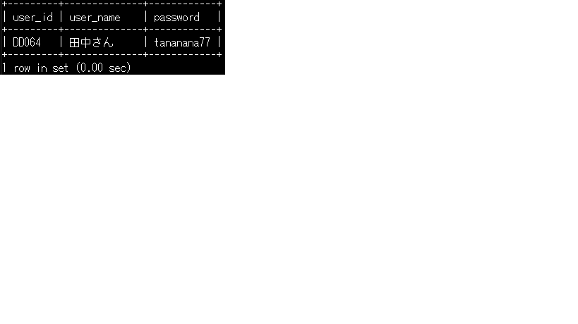
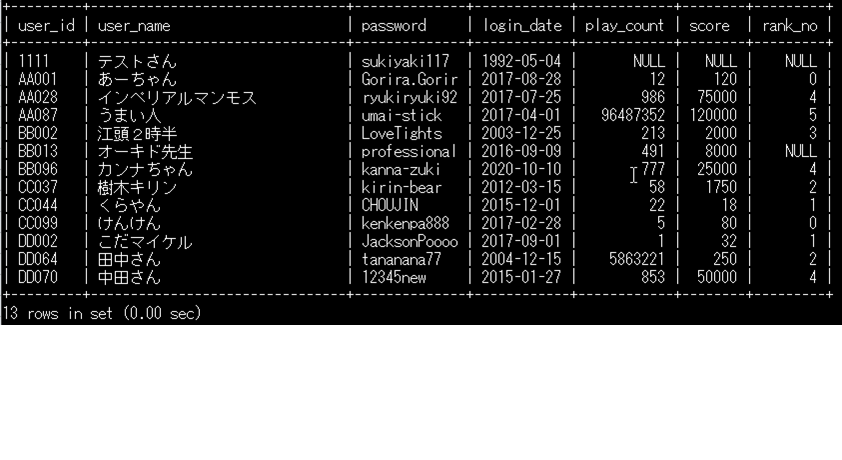
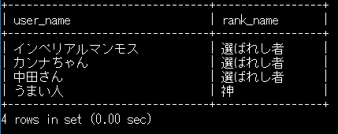
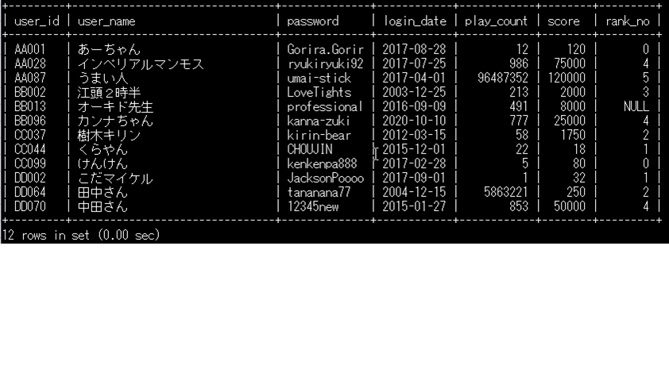
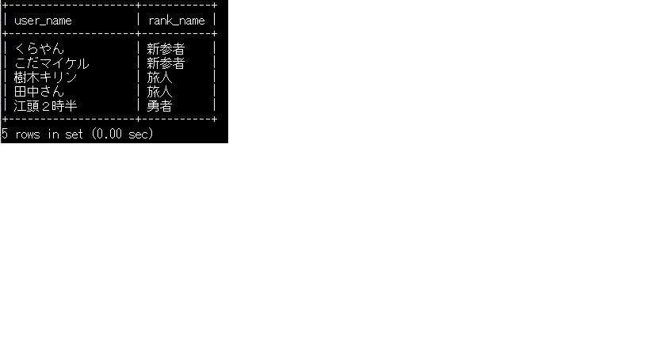
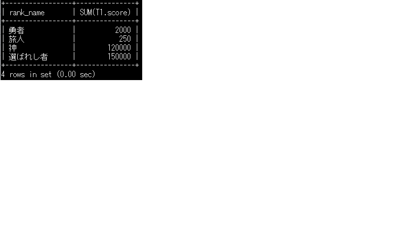
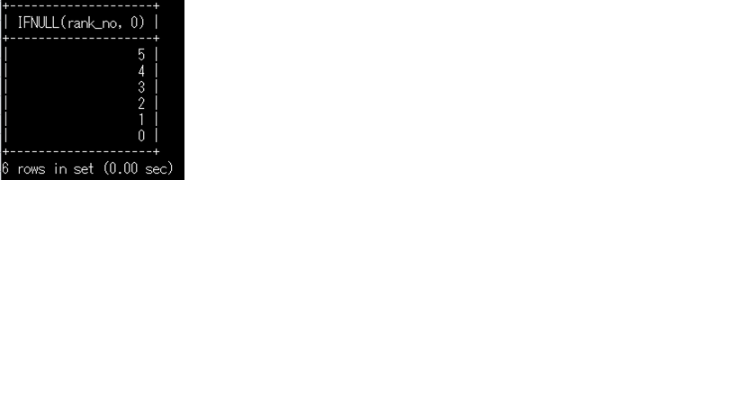

SQL基礎問題
課題概要
SQL基礎課題です。
データベースからの操作は様々な場面で使われますので
しっかりと覚えましょう。
まずはSQL、データベースについて自分で調べてみてください。
本課題では、MySQLを使用します。
※検索時にも、SQLではなくMySQLと入力すると答えが見つけやすいかもしれません。
データベースには、複数のテーブル（表）が存在し、テーブルの中に様々な情報が入っています。
本課題では、TEST_GAME_USERとTEST_RANK_MSTという2つのテーブルへの操作を行うので、
テーブルやカラム、レコードについて理解しておきましょう。
テーブルについては下図を参考にしてください。

SQL基礎
MySQL接続準備
■mysqlテストサーバへの接続方法Teratermを立ち上げ、ホストに192.168.20.248、ポートに22を入力する。
サービスはＳＳＨを選択してＯＫを押下。
ユーザ名：ginga
パスワード：gingastudy
を入力し、ＯＫを押下。
■mysql接続方法
無事サーバ接続が出来たら、コンソールにmysql -uroot -prootpasswordと入力。
これでmysqlの接続が完了です。
■スキーマ作成
SQL手順.xlsx
問題を進める前に、作成したスキーマを使用する設定を行います。以下を入力してください。
USE test_○○; ※鈴木さんの場合、USE test_suzuki になります。 Database changed と表示されたら完了です。
これで準備が整いました。
下記の問題を行ってください。
※以下をエビデンス(証跡)として残すこと
・実行文
・実行結果（ハードコピー[ctr + alt + print screen] → EXCELへ貼り付け[ctr + v] → 保存[ctr + s]）
設問 1
テーブル TEST_GAME_USER より、次の条件を満たす user_id と user_name と password を表示してください。
【条件】 user_name が '田中さん'

設問 2
テーブル TEST_GAME_USER に、次の値を持つレコードを追加して結果を表示してください。
【追加する行の値】 user_id が '1111', user_name が 'テストさん', password が 'yakiniku1010'
設問 3
問題２で追加したレコードに対し、次の値で更新して結果を表示してください。
【更新する値】 password を 'sukiyaki117' へ
設問 4
問題２で追加したレコードに対し、さらに次で更新して結果を表示してください。
【更新する値】 login_date を '1992-05-04' へ

設問 5
テーブル TEST_GAME_USER、TEST_RANK_MST より、次の条件を満たす user_name と rank_name をすべて表示してください。
【条件】 min_score が 50000 以上

設問 6
問題2で追加した行を削除せよ
削除した結果が確認できればなおよい

設問 7
テーブル TEST_GAME_USER、TEST_RANK_MST より、 次の条件を満たす user_name と rank_name をすべて表示してください。
【条件】 rank_name が '新参者' または '旅人' または '勇者'

設問 8
テーブル TEST_GAME_USER、TEST_RANK_MST より、次の条件を満たす レコード の合計を表示してください。
【条件】 rank_name が '選ばれし者'
設問 9
テーブル TEST_GAME_USER、TEST_RANK_MST より、次の条件を満たす rank_name と score の合計 を rank_name 別に表示してください。
【条件】 play_count が 100 より大きい

設問 10
テーブル TEST_GAME_USER より、rank_no を重複なしの「降順」で表示してください。
ただし、値がヌル値の時は 0 を表示してください。
